class: center, middle <center><img src="images/ub.png" width="150"></center> # **ALGORÍSMICA** ## Algorismes de Cerca Jordi Vitrià, Mireia Ribera .blue[jordi.vitria@ub.edu] | .blue[ribera@ub.edu] --- ## Algorismes de cerca El concepte de cerca inclou diferents idees: + Cerca d’un determinat element en una llista (màx, x=“a”, el que compleix una certa condició, etc.). + Cerca d’un determinat element en una llista *ordenada*. + Cerca en un arbre. + Cerca en un graf. + Satisfacció de restriccions. + Etc. Ens centrarem en la **cerca en llistes**. --- ## Algorismes de cerca: cerca lineal L’algorisme que implementa la cerca d’un element en una llista amb una estratègia de força bruta es diu **cerca seqüencial o lineal**. La complexitat de l’algorisme és `O(n)` en el pitjor cas! ```python def linsearch(list,ele): i=0 while i < len(list) and list[i] != ele: i += 1 if i < len(list): return i else: return -1 ``` --- ## Algorismes de cerca: cerca lineal (millorat) Podem fer una petita millora si afegim l’element que busquem al final de la llista: ```python def linsearch(list,ele): list.append(ele) i=0 while list[i] != ele: i += 1 if i < len(list)-1: return i else: return -1 ``` Recordeu de que `list.append(ele)` té una complexitat `O(1)` i per això surt a compte fer-ho! Si enlloc de ser `O(1)` fos `O(n)` (com per exemple `list.insert(ele)`) ja no valdria la pena. --- name:cercbin ## Algorismes de cerca: cerca binària I si la llista està ordenada (un diccionari, els nombres de la loteria, etc.) ho podem fer millor? <center><img src="images/cerca11.png" width="550" alt="resultats de la loteria i pàgina d'un diccionari"></center> --- ## Algorismes de cerca: cerca binària La **cerca binària** ho fa comparant l’element cercat `K` a l’element central de la llista: si hi ha correspondència ja l’hem trobat, sinó, busquem a la subllista (de la dreta o de l'esquerra) que correspon. <center>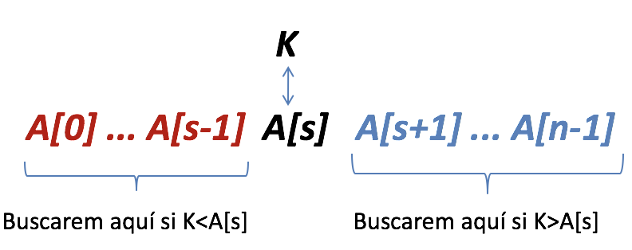</center> --- ## Algorismes de cerca: cerca binària <center>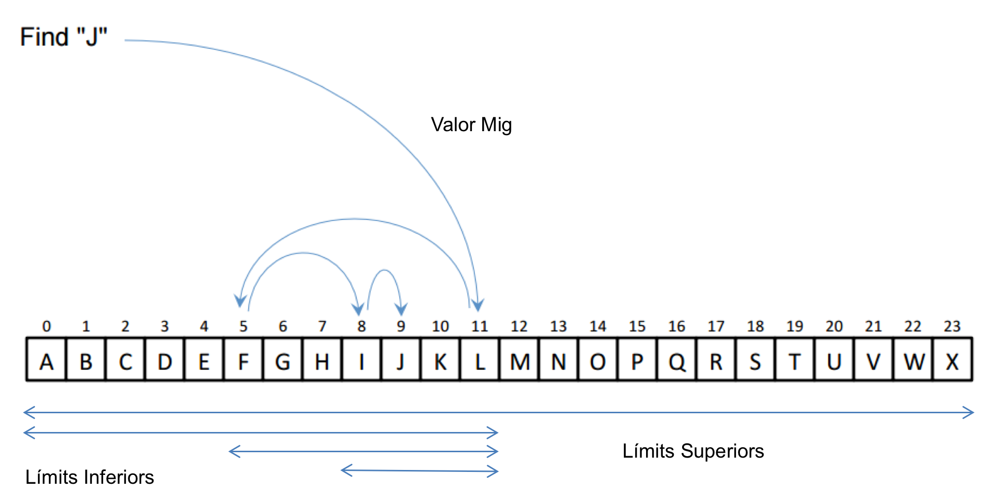</center> > Com acaba l’algorisme si `J` no hi és? --- ## Algorismes de cerca: cerca binària Anem a veure com funcionaria per `K=70`. `l` (low) indica el límit inferior de la subllista a buscar, `h` (high) el límit superior, `m` (middle) el punt de comparació. <center>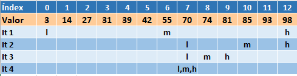</center> --- ## Algorismes de cerca: cerca binària Per analitzar la seva complexitat calcularem el nombre de vegades que la clau de la cerca, `K`, es compara amb un element de la llista. En el pitjor dels casos (quan l’element no hi és), tenim aquesta relació de recurrència: `T(n) = T(n/2) + 1`. Segons el teorema Màster això és `O(log_2 n)`: per una llista de 1.000.000 elements són 20 comparacions! Evidentment és un algorisme recursiu, però és pot implementar fàcilment de forma no recursiva. --- ## Algorismes de cerca: cerca binària ```python def binsearch(nums, K): low = 0 high = len(nums)-1 while low <= high: mid = (low + high) // 2 if nums[mid] > K: high = mid - 1 elif nums[mid] < K: low = mid + 1 else: return mid return -1 ``` El cas promig és més difícil d’analitzar, però es pot demostrar que és només una mica millor que el pitjor cas (tot i que del mateix ordre). > Observació: *Si tenim una llista desordenada de mida n i només hem de buscar un element (o pocs), apliquem una cerca exhaustiva. Però si hem de fer moltes cerques (de l’ordre de n), val la pena ordenar-la primer i fer cerca binària dels elements després!* En general considerem que **la complexitat de la cerca binària sobre una llista ordenada és de `O(log_2 n)`**. --- ## Cerca dels extrems d'una funció. Imaginem ara que tenim un vector no ordenat, com pot ser el corresponent als valors discrets d’una funció multimodal. Com busquem el màxim? Quin tipus de cerca hi podem aplicar? <center>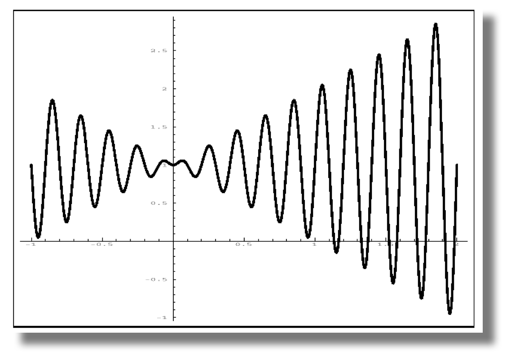</center> --- ## Cerca dels extrems d'una funció. Podem aplicar-hi cerca exhaustiva (de complexitat `O(n)`, on `n` és el nombre de `x` de la funció que conisderem): ```python def func1d(x): # funció multimodal de la que buscarem max import math y = x * math.sin(10*math.pi*(x))+1.0 return y def frange(start, stop, step): # definim un range sobre floats per conveniència current = start while current < stop: yield current current += step def linsearchfunc1d(): x=0.0 # inicialització punt x, corresponent al valor màxim de func1d maxim=0.0 # inicialització valor màxim for i in frange(-1.0,2.0,0.01): if func1d(i)>maxim: maxim=func1d(i) x=i print(maxim) ``` --- ## Cerca dels extrems d'una funció. Si el nombre de punts a mostrejar és molt gran tenim un problema! <center>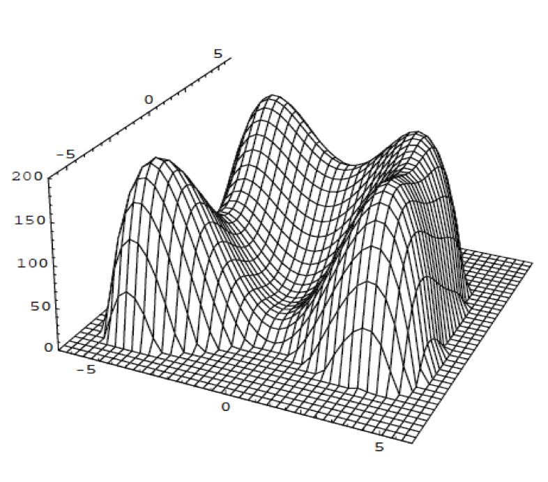</center> En aquest cas si analitzem els punts amb una precisió de `0.01` analitzaríem `300x300` punts. Si necessitéssim una precisió `0.000001` analitzaríem `3000000x3000000` punts. No podem fer cerca exhaustiva! --- ## Cerca dels extrems d'una funció. Té sentit fer una cerca aleatòria? (= anar generant nombres de forma aleatòria dins del rang de les variables i quedar-se el màxim). <center>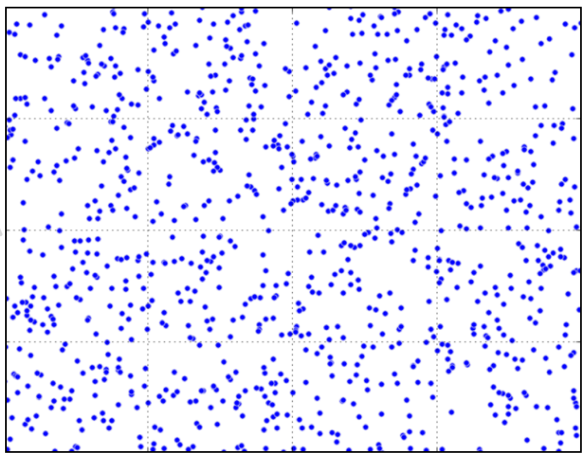</center> --- ## Cerca dels extrems d'una funció. La cerca aleatòria és: ```python def rsearchfunc1d(): import random x=0.0 maxim=0.0 for i in range(1000): xtemp = (random.random()*3.0)-1.0 # valors entre -1 i 2 if func1d(xtemp)>maxim: maxim=func1d(xtemp) x=xtemp return maxim ``` En general, la cerca totalment aleatòria **no** és una bona solució: tenim el cost de la cerca afitat, però depèn molt de l’aleatorietat i té un resultat molt semblant, si no equivalent, a la cerca lineal, per força bruta. --- name:genetic ## Algorismes de cerca: cerca amb algorismes genètics. Anem a veure un tipus d’algorisme aproximat que ens fa una cerca, amb un cert component aleatori més intel·ligent, de l’espai de solucions: la cerca basada en **algorismes genètics**. El terme algorismes genètics s’utilitza per a referir-se a una família bastant àmplia de models computacionals de càlcul basats en els mecanismes d’evolució biològica. La idea de selecció natural va ser introduïda per Charles Darwin el 1859 dins del seu llibre *L’Origen de Les Espècies*. Aquesta idea pot servir d’analogia per a construir mètodes de cerca en problemes d’optimització combinatòria i mètodes d’aprenentatge. --- ## Algorismes de cerca: cerca amb algorismes genètics. Darwin va assentar les bases del principi d'evolució per selecció natural amb les següents idees: + Cada individu tendeix a passar els seus trets característics a la seva descendència. + Tot i així, la natura produeix individus amb trets diferents. + Els individus més adaptats tendeixen a tenir més descendència, i a la llarga, la població tendeix a ser "millor". + Al cap d'un llarg període, l'acumulació de canvis pot produir espècies totalment noves, adaptades al seu entorn. -- A més a més la natura disposa d'una sèrie de mecanismes reguladors externs a aquest procés però igualment interessants: el mecanisme de diversitat, els paràsits, les organitzacions socials, etc. --- ## Algorismes de cerca: cerca amb algorismes genètics. Els mecanismes biològics que fan possible l’evolució són avui coneguts. A la natura, podem veure com la transmissió de la informació genètica (genoma) es fa a través de la reproducció sexual. Aquest procediment permet als descendents ser diferents dels seus antecessors, tot i que conservant la majoria de trets. El mecanisme sobre el que està basada la reproducció es troba a nivell molecular, i consisteix en l'aparellament de cromosomes (lloc on trobem el genoma), l'intercanvi d'informació, i la posterior partició. D'això n'hi direm **creuament**. La probabilitat de que dos individus es creuin depèn de la seva adaptació al medi. --- ## Algorismes de cerca: cerca amb algorismes genètics. Per inspiració d’aquests mecanismes usarem terminologia de biologia per als nostre problemes: + Gens + Genoma + Cromosomes + Creuaments i mutacions. + Funció d’adaptació. + Mecanismes correctors/moduladors: diversitat, parasitisme, organització social, etc. --- ## Algorismes de cerca: cerca amb algorismes genètics. El **cicle** normal d'un algorisme genètic és: + avaluar l'adaptació de tots els individus de la població (amb la funció d’adaptació). Aquesta funció incorpora l’objectiu del problema. + crear una nova població mitjançant reproducció fent servir: + creuament + mutació dels cromosomes dels individus + descartar la població antiga (hem d’assegurar que el resultat d’aplicar els operadors genera possibles solucions al problema.) + iterar sobre la nova població. Cada una de les iteracions d'aquest cicle es coneix com a **generació**. --- ## Algorismes de cerca: cerca amb algorismes genètics. Quan dissenyem un algorisme genètic per resoldre un problema caldrà decidir algunes qüestions: + Quina és la funció d'adaptació? + Com representarem els individus/solucions? + Com seleccionarem els individus per reproduir-se? + Com creuarem i mutarem els individus? + Quina és la probabilitat de mutació? + Necessitem mecanismes moduladors (p.e. diversitat)? --- ## Algorismes de cerca: cerca amb algorismes genètics. La **funció d’adaptació** és pròpia de cada problema que volem resoldre. En el problema que hem posat com a exemple (la funció multimodal), la funció d’adaptació és el valor de `f(x): (math.sin(10*math.pi*(x))+1.0)`. > Per tant, la màxima adaptació correspon al màxim d’aquesta funció multimodal. -- El problema del viatjant de comerç també és un problema candidat a ser resolt amb algorismes genètics. > La funció d’adaptació seria `1/d`, on `d` és la distància recorreguda (i així un valor de la funció alt és una bona solució). > Un cromosoma representaria un circuit que és potencialment solució del problema. --- ## Algorismes de cerca: cerca amb algorismes genètics. Normalment es considera que la millor **representació** dels cromosomes possible és la binària. El creuament, la mutació, i d'altres operacions que es poden utilitzar, són aleshores simples operacions a nivell de bit. Suposem doncs que tenim una població inicial de quatre individus amb les següents característiques: | individu | valor adaptació | possibilitat de selecció | |----------------|-----------------|--------------------------| | 000110010111 | 8 | 32% | | 111010101100 | 6 | 24% | | 001110101001 | 6 | 24% | | 111011011100 | 5 | 20% | I suposem que definim la probabilitat de selecció en funció del valor d'adaptació (q) com a $$ f_i = \dfrac {q_i}{\sum_j q_j} $$ Com els seleccionem i els creuem? --- ## Algorismes de cerca: cerca amb algorismes genètics. Una primera alternativa per la selecció és triar parelles aleatòriament tenint en compte la seva probabilitat de selecció. > És com si fem rodar una ruleta i ens va donant individus; l’individu amb més probabilitat de selecció ocupa més posicions a la ruleta. Imaginem que la selecció ens ha donat aquestes dues parelles: <center>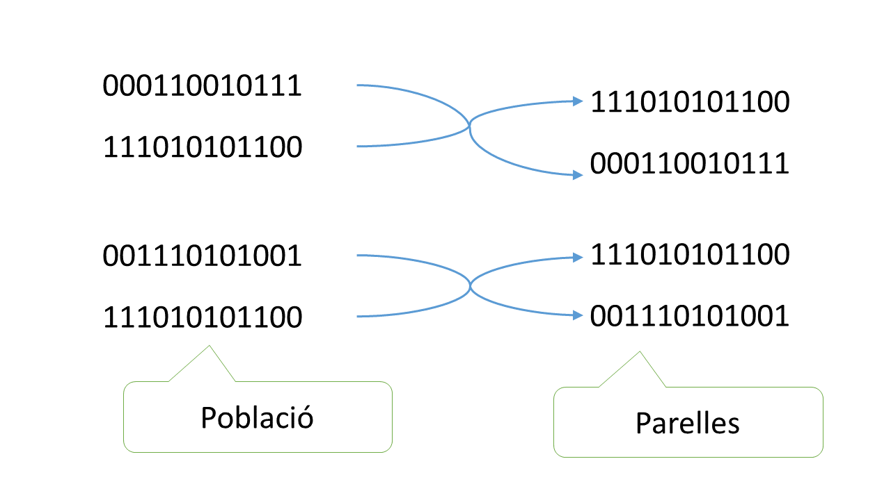</center> I ara, com les creuem? --- ## Algorismes de cerca: cerca amb algorismes genètics. La forma més simple de creuament és generar un punt de tall aleatòriament i intercanviar: <center><img src="images/gen3.png" width="550" alt="als dos membres de la parella se'ls posa un punt de tall, per exemple en el bit 4, la nova generació es crea combinant els bits 0..3 del pare amb els bits 4...n de la mare i viceversa"></center> --- ## Algorismes de cerca: cerca amb algorismes genètics. Per a **mutar-los** canviarem el valor d’un quants bits de la població de forma aleatòria. La probabilitat de que un bit canviï de valor és `β` i la que probabilitat de no canviar és `(1- β)`, però sempre `β < (1- β)`. --- ## Algorismes de cerca: cerca amb algorismes genètics. En resum, la **funció d’adaptació** depèn del problema que volem resoldre. + La representació òptima, és en la majoria de casos i si no hi ha motius fonamentats per dubtar-ho, la binària. + La representació ha facilitar que el resultat d’aplicar els operadors genètics sigui vàlid. L’operació de **creuament** crea dos nous individus seleccionant punts de creuament en els cromosomes seleccionats i intercanviant les seves parts. L’operació de **mutació** consisteix en la selecció aleatòria d’algun dels gens del cromosoma i el canvi del seu valor. La probabilitat de mutació ha de ser petita (si no ho convertim en cerca aleatòria!). --- ## Algorismes de cerca: cerca amb algorismes genètics. Probabilitat de supervivència: + El valor d’adaptació de cada individu depèn del problema concret. + La probabilitat de supervivència a la següent generació és una ponderació del valor d’adaptació, i es pot fer de diverses maneres: el mètode estàndard (que ja hem vist), el mètode d’ordenació, el mètode de la diversitat, etc. + A partir d’ara suposarem que la generació següent es forma a partir d’una selecció entre els elements del conjunt format pels cromosomes progenitors i pels cromosomes descendents, però seguint una **estratègia elitista**: el(s) millor(s) cromosomes passen automàticament (així assegurem que una bona solució no es perd mai). --- ## Algorismes de cerca: cerca amb algorismes genètics. Ponderació del valor d’adaptació. + **Mètode Estàndard**. Donat un cromosoma `i`, aquest és avaluat com a possible solució al problema en qüestió. Com a resultat obté un valor d’adaptació `q`. Llavors definim la seva probabilitat de selecció com $$ f_i = \dfrac {q_i}{\sum_j q_j} $$ | individu | valor adaptació | possibilitat de selecció | |----------------|-----------------|--------------------------| | 000110010111 | 8 | 32% | | 111010101100 | 6 | 24% | | 001110101001 | 6 | 24% | | 111011011100 | 5 | 20% | > Un dels inconvenients associat al mètode estàndard és el poc pes que dóna al cromosomes "dolents", fet que els impedeix de passar a les futures generacions, i per tant, transmetre les poques coses que tinguin bones. Un altre possible inconvenient és que moltes vegades la funció d’avaluació és qualitativa: ordena de forma correcta però els seus valors no són precisos. --- ## Algorismes de cerca: cerca amb algorismes genètics. + **Mètode d'Ordenació**: Per insensibilitzar el mètode de selecció respecte al valor d'adaptació del problema, podem ordenar els cromosomes segons aquest valor, i els ponderem segons aquesta regla: + Establim un valor aleatori `p` entre `0` i `1`. + Al primer cromosoma li assignem aquesta probabilitat + Al segon li assignem la probabilitat `p*(1-p)` + La probabilitat de l'`i`-èssim cromosoma és `p * (1 – la probabilitat que s’hagi triat algun cromosoma anterior)`. --- ## Algorismes de cerca: cerca amb algorismes genètics. > Per exemple, suposem que `p=0.667`. Llavors: <center>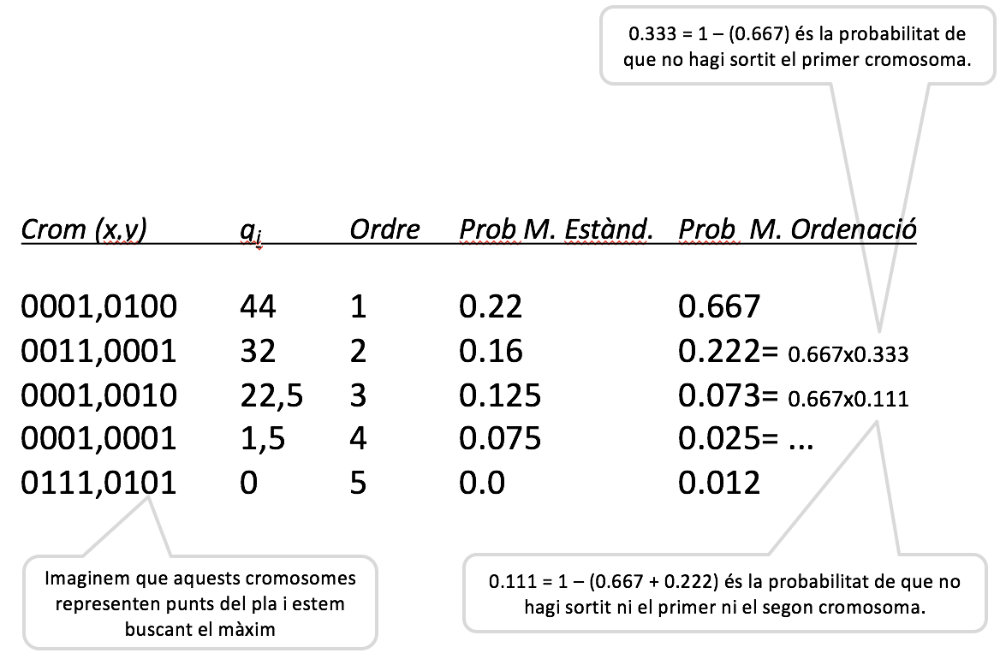</center> --- ## Algorismes de cerca: cerca amb algorismes genètics. + Ponderació del valor d’adaptació: **Mètode de Diversitat**. Aquest mètode es basa en l'anomenat principi de diversitat: és quasi tan bo ser diferent com estar adaptat. > Definim la diversitat d'un grup de cromosomes com: <center><img src="images/gen6.png" width="550" alt="La distància que usem pot ser des del nombre de bits diferents entre cada cromosoma a una funció definida per l'usuari a partir del coneixement del problema. En el nostre exemple considerarem la distància euclidiana sobre punts el pla. En el cas més general podríem fer servir la distància de Hamming"></center> > on `d_i` és una mesura de distància entre cromosomes. --- ## Distància de Hamming > La **distància de Hamming** entre dues cadenes de la mateixa longitud és el nombre de posicions diferents. Si considerem cadenes de bits, correspon al nombre de bits que s'han de canviar d'una cadena perquè passi a tenir el valor d'una altra cadena. > Exemple: la distància de Hamming entre 011101 i 011011 és de 2 ja que per arribar de la primera cadena a la segona cal canviar 2 bits --- ## Algorismes de cerca: cerca amb algorismes genètics. Ponderació del valor d’adaptació: Mètode de Diversitat. Com l’apliquem? + El millor cromosoma passa automàticament a la següent generació (estratègia elitista). + Calculem la diversitat de tots els cromosomes respecte als que han passat a la + següent generació. + Ordenem els cromosomes segons la seva funció d’avaluació. + Sumem els nombres que representen l’ordre obtingut per cada cromosoma als passos 2 i 3. I reordenem segons aquest valor. + Triem el cromosoma que passa a la següent generació segons el mètode d’ordenació i si queden cromosomes per triar, i tornem al punt 2. --- ## Algorismes de cerca: cerca amb algorismes genètics. **Ponderació del valor d’adaptació: Mètode de Diversitat.** Exemple: <center>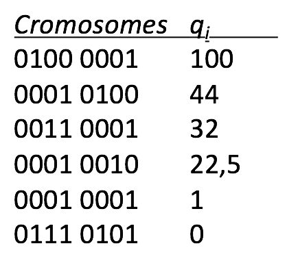</center> El cromosoma millor passa a la següent generació. En el nostre cas és el cromosoma `(0100 0001)`. Per tant resten per triar 2 cromosomes entre `(0001 0100)`, `(0011 0001)`, `(0001 0010)`, `(0001 0001)`, `(0111 0101)`. --- ## Algorismes de cerca: cerca amb algorismes genètics. Construirem la taula segons el mètode de diversitat segons la diversitat de cada cromosoma amb respecte al que ja ha passat: <center>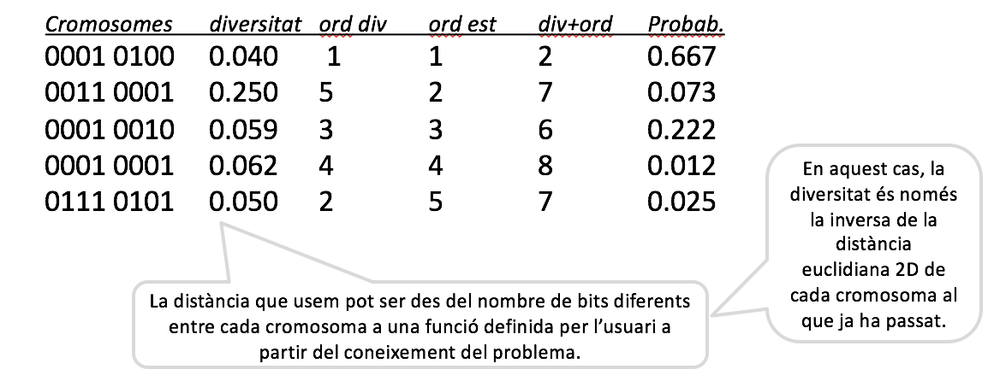</center> --- ## Algorismes de cerca: cerca amb algorismes genètics. Llavors triem el següent que passa, i resulta que és el cromosoma `(0001 0100)`. A partir d'aquest moment repetim el procés anterior, però calculant la diversitat respecte al dos cromosomes que ja han passat: <center>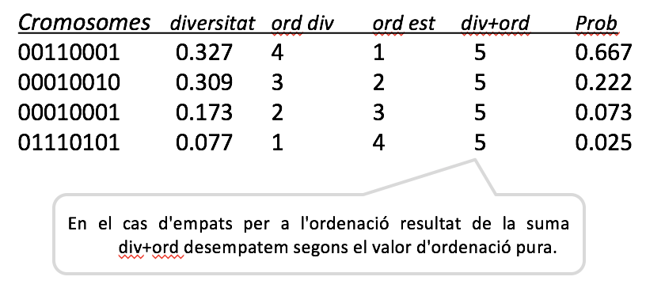</center> --- ## Exemple: Optimització d'una funció multimodal. El problema és trobar la `x` dins del rang `[-1 .. 2]` que maximitza `f`: <center>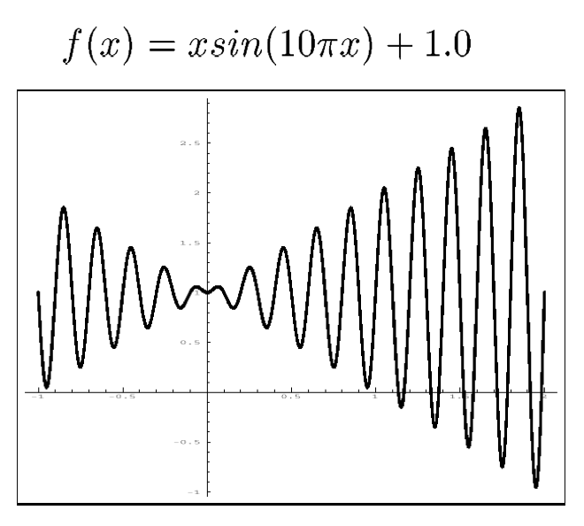</center> --- ## Exemple: Optimització d'una funció multimodal. + Utilitzarem un vector binari com a cromosoma per a representar el valor real de la variable `x`. La longitud del vector dependrà del domini i la precisió. + En el cas estudiat, el domini de la variable `x` és `[-1,2]`, té longitud 3. + Suposem que volem 6 decimals (1.000.000 de valors per cada unitat). Per tant, necessitem mostrejar el rang en 3.000.000 posicions, o sigui, 22 bits: `2.097.152 = 2^21 < 3.000.000 < 2^22 = 4.194.304`. --- ## Exemple: Optimització d'una funció multimodal. La transformació d'una seqüència binària `[b_21,...,b_0]` a un nombre real `x` es fa en dos passos: + Primer convertim la seqüència de base 2 a base 10. + Després trobem el nombre real corresponent: <center><img src="images/gen11.png" width="250" alt="x=-1.0+ x' 3 / (2^22 -1)"></center> > on `-1.0` és el límit esquerra de l'interval i `3` la longitud. --- ## Exemple: Optimització d'una funció multimodal. L'algorisme te els següents passos: + Escollim com a població inicial 50 individus de forma aleatòria: ```python # Creem la població inicial def initpop(n,long): import random # Generem una poblacio de n cromosomes de longitud long. pop = [[0] * long for x in range(n)] for i in range(n): for j in range(long): if random.random()>0.5: pop[i][j] += 1 return pop ``` --- ## Exemple: Optimització d'una funció multimodal. + La funció d'avaluació serà equivalent a la funció del gràfic `f`: ```python # Definim la funció d'avaluació d’un cromosoma de len(r) bits. def cost(r): import math # Transformem els bits en un valor real a l'interval [-1,2] sum=0.0 for i in range(len(r)): sum = sum + r[i]*(2**i) x = -1.0 + sum * (3.0/(2.0**(len(r))-1.0)) # Avaluem el cromosoma y = x * math.sin(10*math.pi*(x))+1.0 return y ``` --- ## Exemple: Optimització d'una funció multimodal. Per fer la mutació imposem una probabilitat de mutació `pm = 0.01` per a cada bit. Per exemple, + si tenim el cromosoma `v3 = (1110000000111111000101)`, que té com a valor f(x3) 2.250650 + seleccionem el cinquè bit per mutar, + obtindrem `v3' = (1110100000111111000101)`. + el nou cromosoma representa el valor `x3'=1.721638`, i per tant `f(x3') = 2.343555` + `f(x3')` s'ha incrementat respecte `f(x3)`. --- ## Exemple: Optimització d'una funció multimodal. ```python # Definim la mutació amb probabilitat mutprob def mutacio(r,mutprob): import random for i in range(len(r)): if random.random() < mutprob: if r[i]==0: r[i]=1 else: r[i]=0 return r ``` --- ## Exemple: Optimització d'una funció multimodal. Per al creuament d’una parella de cromosomes escollirem aleatòriament un punt de tall i intercanviarem informació per crear els dos descendents. ```python # Definim el creuament def creuament(r1,r2): import random i=random.randint(1,len(r1)-2) return r1[:i]+r2[i:],r1[i:]+r2[:i] ``` --- ## Exemple: Optimització d'una funció multimodal. Si iterem l'algorisme 150 generacions trobem que el millor cromosoma és `vmax = (1111001101000100000101)`, que correspon al valor `xmax = 1.850773`. L'evolució de l'algorisme es pot avaluar a partir del millor valor de la funció aconseguit en cada generació: ```python 1 1.441942 6 2.150003 8 2.250283 9 2.250284 10 2.250363 12 2.328077 39 2.344251 51 2.733893 99 2.849246 137 2.850217 145 2.850227 ``` --- ## Exemple: Optimització d'una funció multimodal. Observació vàlida per a qualsevol problema de recerca amb algorismes genètics: > Quin és el factor que més pesa en el càlcul de la complexitat computacional de l’algorisme? El nombre d'avaluacions! En el nostre problema hem fet `50x150=7.500` avaluacions! > Els operadors genètics tenen un cost computacional nul, per tant la complexitat de l’algorisme és el nombre d’avaluacions per la complexitat de l’avaluació.